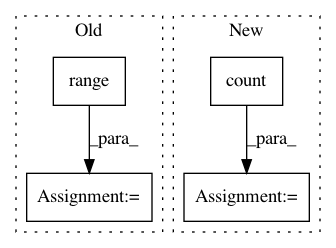

63594c537064d5cc47179169df6e6e6defa613d6,python/ray/serve/backend_state.py,BackendState,_scale_backend_replicas,#BackendState#Any#Any#Any#,628
Before Change
-delta_num_replicas, backend_tag))
assert self._target_replicas[backend_tag] >= delta_num_replicas
for _ in range(-delta_num_replicas):
replicas_to_stop = self._replicas[backend_tag].pop(
states=[
ReplicaState.SHOULD_START, ReplicaState.STARTING,
ReplicaState.RUNNING
],
max_replicas=-delta_num_replicas)
for replica in replicas_to_stop:
replica.set_should_stop(graceful_shutdown_timeout_s)
self._replicas[backend_tag].add(ReplicaState.SHOULD_STOP,
replica)
return True
def _scale_all_backends(self):
checkpoint_needed = False
After Change
elif delta_replicas > 0:
// Don"t ever exceed target_replicas.
stopping_replicas = self._replicas[backend_tag].count(states=[
ReplicaState.SHOULD_STOP,
ReplicaState.STOPPING,
])
to_add = max(delta_replicas - stopping_replicas, 0)
if to_add > 0:
logger.info(f"Adding {to_add} replicas "
f"to backend "{backend_tag}".")
for _ in range(to_add):
In pattern: SUPERPATTERN
Frequency: 3
Non-data size: 4
Instances
Project Name: ray-project/ray
Commit Name: 63594c537064d5cc47179169df6e6e6defa613d6
Time: 2021-03-25
Author: ed.nmi.oakes@gmail.com
File Name: python/ray/serve/backend_state.py
Class Name: BackendState
Method Name: _scale_backend_replicas
Project Name: dgasmith/opt_einsum
Commit Name: 81ce5ee9a1590e7b4154e72dca54c33ad27b6d89
Time: 2018-07-21
Author: john.gray.14@ucl.ac.uk
File Name: opt_einsum/contract.py
Class Name: ContractExpression
Method Name: __init__
Project Name: MTG/freesound
Commit Name: 0f7bacc26eec44c9f00f5d7666c1f87f0e051ce2
Time: 2017-11-10
Author: andres.ferraro@upf.edu
File Name: search/management/commands/post_dirty_sounds_to_solr.py
Class Name: Command
Method Name: handle